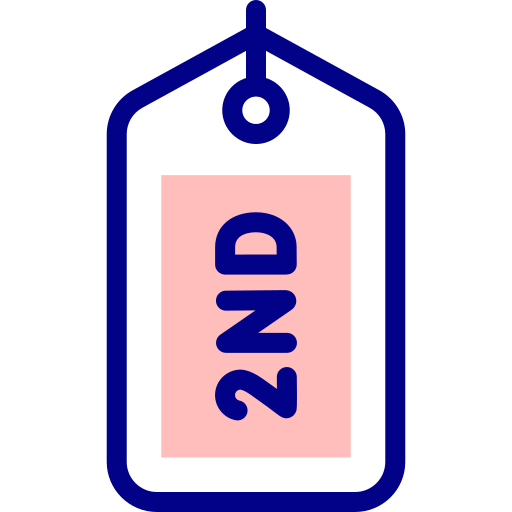
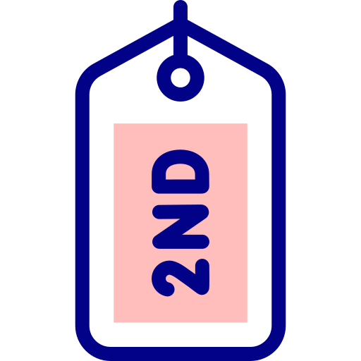

Tecnología y Digitalización es una materia obligatoria de 2ºy 3º de la ESO
Nuestra Situación de Aprendizaje está dirigida al alumnado de 2º. 
Icon by freepik
Tecnología y Digitalización es una materia obligatoria de 2ºy 3º de la ESO
Nuestra Situación de Aprendizaje está dirigida al alumnado de 2º. 
Icon by freepik
Es importante tener en cuenta el hecho de que el alumnado que cursa la materia de tecnología en 2º ESO en Andalucía no ha cursado la materia de tecnología en cursos anteriores.

Icon by freepik
Obra publicada con Licencia Creative Commons Reconocimiento Compartir igual 4.0